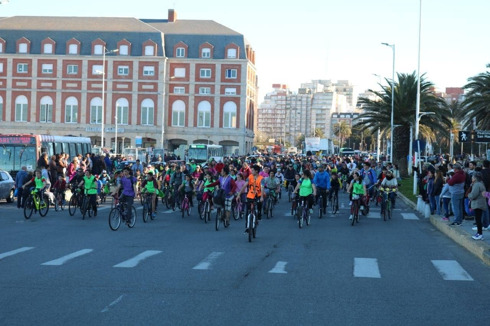
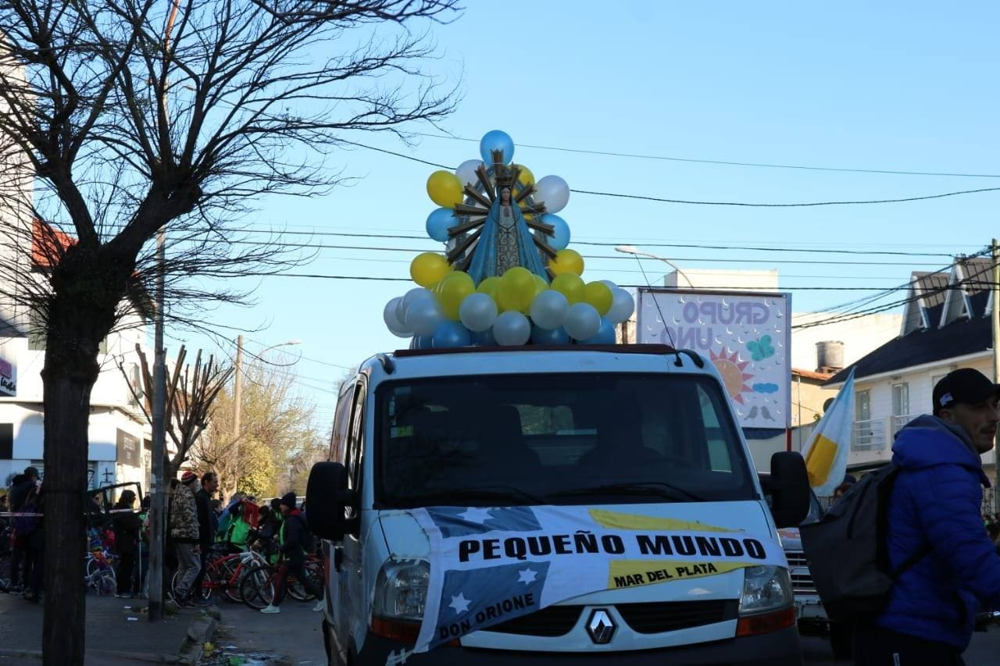
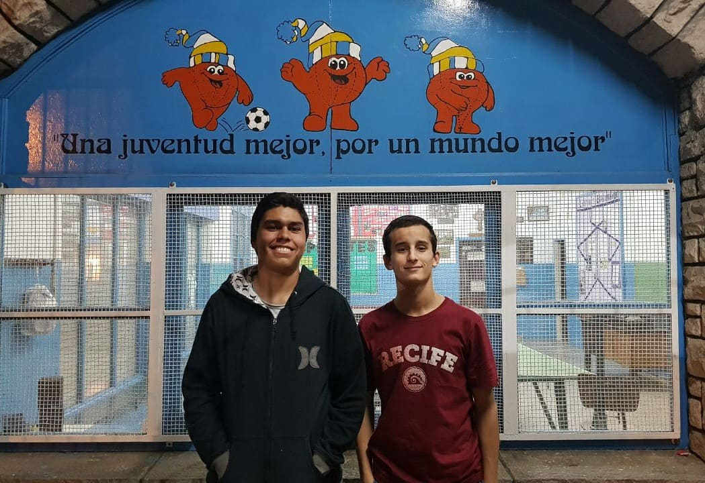
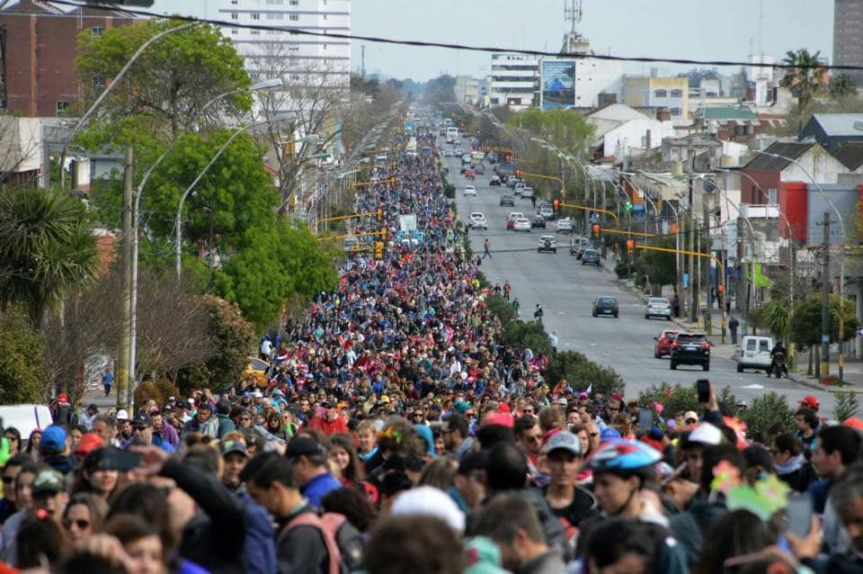
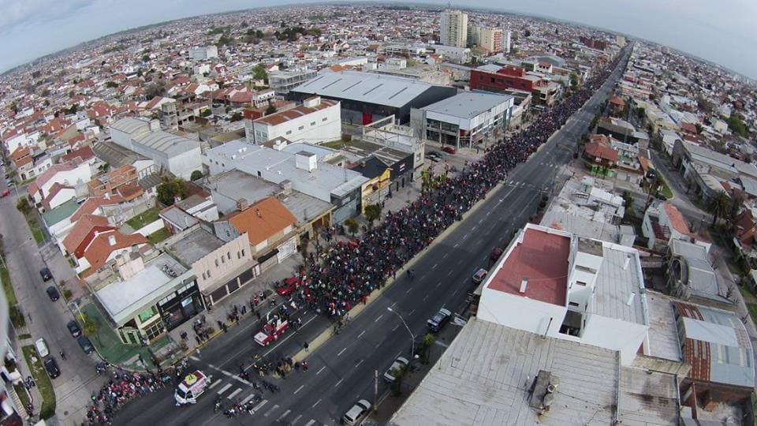

Organizacion No Gubernamental, Organizadora de la CARAVANA DE LA PRIMAVERA
Aspirantes es la seccion de los mas chiquitos. En estas edades se empieza a conocer todo lo necesario para la organizacion de eventos de la forma mas ludica posible. De 4 a 12 años es la edad permitida de esta seccion. De lunes a viernes estan invitados los chicos, en el horario de 17 a 20hs, para aprovechar el horario de salida del colegio de los chicos. Los niños estaran supervisados por integrantes del grupo pertenecioentes a la seccion de Juveniles

Prejuveniles es la seccion de los del medio, chicos en etapa de secundaria. En estas edades se suman responsabilidades para la organizacion e eventos, para ir formandolos para hacerse cargo en el futuro cercano. De 13 a 17 años es la edad permitida de esta seccion. Los jueves y sabados a las 20hs es la convocatoria de los chicos. Se empieza la actividad con algun momento de reflexion de 90 minutos y los restantes 90 minutos se ingresa al gimnasio de la Parroquia para poder jugar un rato al futbol. Los chicos, al igual que los aspirantes, estaran supervisados por integrantes del grupo, pertenecientes a la seccion de Juveniles
Juveniles es la seccion de los mas grandes, los que ya terminaron el colegio. Este grupo es el encargado de llevar adelante la Organizacion y todos los eventos. Parte de esta seccion es integrante de la comision directiva y toman todas las decisones administrativas del Oratorio. Mayores de 18 años. Los viernes y sabados a las 20hs es la convocatoria de los chicos. Se empieza la actividad con algun momento de reflexion de 90 minutos y los restantes 90 minutos se ingresa al gimnasio de la Parroquia para poder jugar un rato al futbol. A cargo del grupo estan 2 chicos de esta misma seccion, determinados por la comision directiva